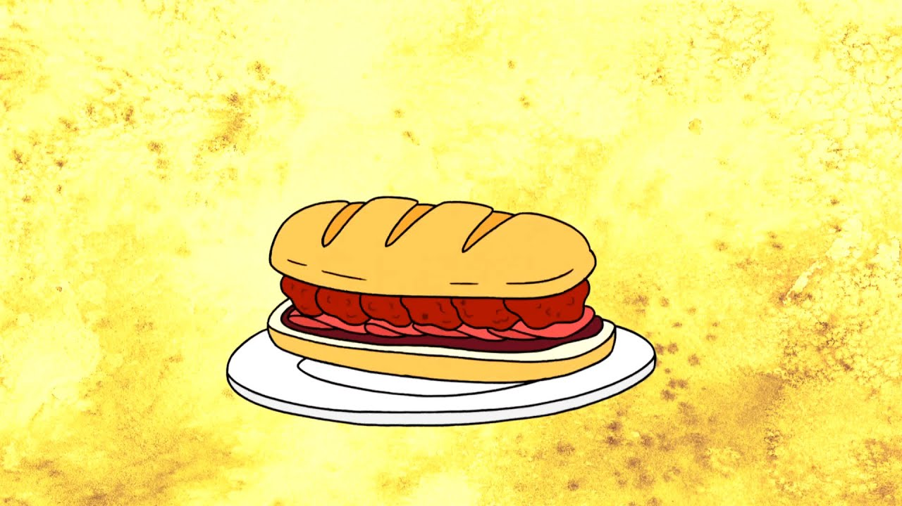

Sandwich of Death

Description
This is the most dangerous sandwiches in the entire world.
one bite and you will die, if you do not know the correct method of eating.
Let it be known that this sandwich must be ate with a mullet
and ripped jean shorts, in the name of kung-fu.
Ingredients
- 2 slices of bread(preferably multigrain for a touch of health)
- 1 large scoop of mystery meat(choose your favorite deli meat)
- 1 slice of cheese(for an added element of danger)
- 1 handful of spicy jalapenos
- 1 tablespoon of hot sauce(or more, depending on you spice tolerance)
- 1 pickle(preferably the kind taht stares back at you)
- 1 tablespoon of mustard(to add a zing of excitement)
- 1 leaf of lettuce(for a touch of greenery)
- 1 dash of chaos(use sparingly)
Steps
- Gather all the ingredients and lay them out on your kitchen counter. Prepare to embark on a culinary adventure
- Select two slices of bread. The type of bread is crucial; multigrain adds an element of unpredictability.
- Place the mystery meat on one slice of bread. The more mysterious, the better. It's the cornerstone of the Sandwich of Death.
- Lay a slice of cheese on top of the mystery meat. Choose a cheese that adds an element of danger to your sandwich
- Sprinkle jalapeños generously over the cheese. This adds the required level of spiciness for the Sandwich of Death
- Drizzle hot sauce over the jalapeños. The heat should be potent, giving the sandwich its deadly kick.
- Place a pickle strategically on the sandwich. Its mysterious gaze adds an aura of uncertainty.
- Apply mustard liberally. This zesty condiment contributes to the overall chaos of the sandwich.
- Add a leaf of lettuce for a touch of freshness. It's a surprising element amidst the chaos.
- Sprinkle a dash of chaos over the sandwich. This is the secret ingredient that ties everything together.
- Place the second slice of bread on top to complete the sandwich. Take a deep breath, embrace the uncertainty, and take a bite of the legendary Sandwich of Death.
Home Page